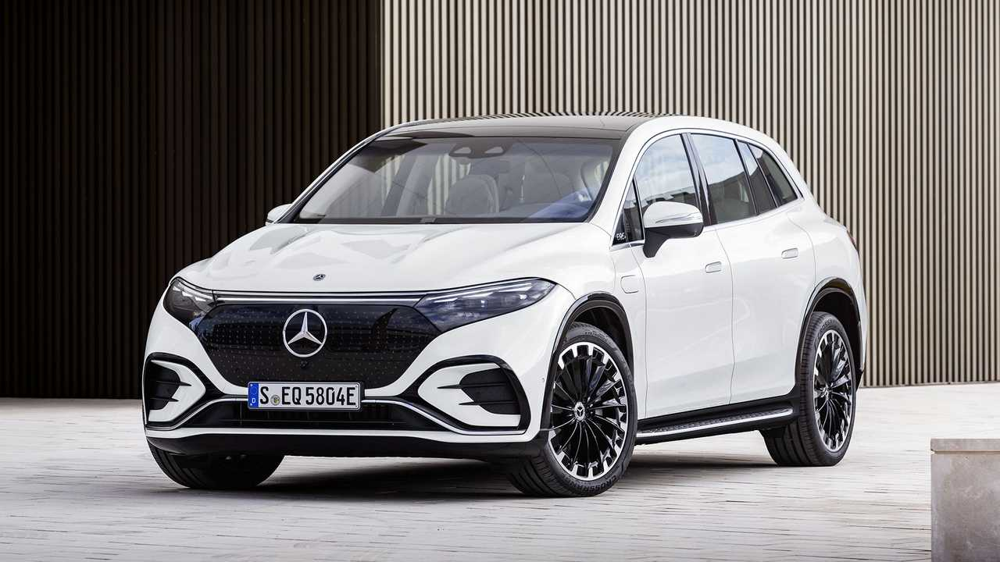

Одним из ключевых преимуществ электрических автомобилей является возможность быстрой зарядки. Современные зарядные станции, такие как станции быстрой зарядки, могут значительно сократить время, необходимое для зарядки аккумулятора. В отличие от традиционных заправочных станций, где процесс займет несколько минут, зарядка электромобиля может произойти за время, достаточное для короткого перерыва или остановки на обед.
Меньше времени на обслуживание
Электрические автомобили требуют значительно меньше технического обслуживания по сравнению с традиционными автомобилями с двигателями внутреннего сгорания. Они имеют меньше подвижных частей, которые нужно обслуживать, и не требуют замены масла или других жидкостей. Это освобождает владельцев от необходимости регулярно посещать автомастерские, что в конечном итоге экономит их время.
Интегрированные технологии для оптимизации маршрутов
Многие электрические автомобили оснащены передовыми системами навигации, которые могут помочь водителям выбрать оптимальный маршрут с учетом наличия зарядных станций и текущего уровня заряда аккумулятора. Это позволяет избежать ненужных остановок и сэкономить время в пути.
Уменьшение пробок и доступ к эксклюзивным полосам
Некоторые города предоставляют привилегии для электрических автомобилей, такие как доступ к эксклюзивным полосам движения или освобождение от оплаты определенных дорожных сборов. Это может существенно сократить время в пути и обеспечить более плавное движение.
BMW
BMW's electrified future is previewed by the 2023 iX SUV, which offers similar space and practicality as the brand's popular X5, but with cutting-edge flair. Two electric motors provide all-wheel drive and more than ample power—516 hp in the xDrive50 and a whopping 610 hp in the M60—while a large battery pack delivers enough juice for an estimated driving range of over 300 miles per charge. The iX's spacious interior is lined with fine materials and features a fancy, futuristic design; a large digital dashboard displays the future of BMW's iDrive infotainment system and is controlled by a cool see-through rotary knob on the center console. The iX has what it takes to compete with established all-electric rivals such as the Audi e-tron and the Tesla Model X, and should stack up well against newcomers such as the Fisker Ocean and the Rivian R1S.
Minimalist design.
The interior showcases modern design at its best. This is exemplified by the glass iDrive Controller on the centre console, which is framed by an elegant control panel made of FSC-certified wood.
Hexagonal steering wheel.
Inspired by the world of racing, BMW's first hexagonal steering wheel, with new multifunctional buttons, makes getting in and driving more comfortable.
BMW Curved Display.
The 12.3″ Information Display merges with the 14.9″ Control Display to create a single curved display unit. It takes driver centric controls to the next level.
AUDI
Electrons, motors, battery packs, and kilowatts have added a host of new words to the automotive lexicon, but when it comes to the Audi e-tron GT EV, the vocabulary is simple: this thing is fun! The revised grille is now painted to match the body color. A second charging port is standard, located on the passenger side of the car. Every e-tron GT now comes with an integrated toll module for the rearview mirror, a Bang & Olufsen sound system, and 20-inch wheel with all-season tires. The E-tron GT Prestige gets a new optional 21-inch 10-spoke wheel package that replaces the previously available gray finish wheels.
The headlights of the e-tron GT quattro and the RS e-tron GT are three-dimensional sculptures with dynamic character and a modern aesthetic. The V-shaped headlights of the e-tron GT quattro come in three versions: LED, Matrix LED, and laser light as an additional high beam. An expressively designed X-shaped bezel secures the Audi laser light – the additional high beam is available as an option in the e-tron GT quattro and the RS e-tron GT series. The lower area of the headlight consists of detached elements with edges illuminated in blue. The central wings of the daytime running light signature form the upper part of the X.
If you open the door to any modern Audi, you can always expect the interior to be stunning. You get quad-zone automatic climate control as standard, along with a power panoramic sunroof, a heated steering wheel and heated front seats, and loads of leather. The interior is hugely spacious and ergonomic, although not quite perfect. Thanks to an absence of physical buttons for most functions, the e-tron, as with many other Audis currently on offer, requires that you divert your gaze far from the road to change the temperature of the climate control. It's one small gripe in an otherwise brilliant cabin, and this interior emphasizes that Audi is looking to make EVs feel like regular, mainstream cars.
MERCEDES

Electric recharge
Fast Charging (10 -> 80%)
Rapid charging enables longer journeys by adding as much range as possible in the shortest amount of time. Charging power will decrease significantly after 80% state-of-charge has been reached. A typical rapid charge therefore rarely exceeds 80% SoC. The rapid charge rate of an EV depends on the charger used and the maximum charging power the EV can handle. The table below shows all details for rapid charging the Mercedes EQS SUV 580 4MATIC.
Max. Power: maximum power provided by charge point
Avg. Power: average power provided by charge point over a session from 10% to 80%
Time: time needed to charge from 10% to 80%
Rate: average charging speed over a session from 10% to 80%
Interior
Interior, Comfort, and Cargo
Inside, the EQS SUV features the type of rich materials and high-tech equipment that define modern-day Mercedes-Benz models. Its list of standard interior features includes selectable ambient lighting, heated and ventilated front seats, leather upholstery, a panoramic sunroof, and wireless charging. The 56-inch Hyperscreen is optional. The fit-and-finish is impressive and the cabin is also rife with thoughtfully-designed storage spaces, including a large bin below the floating center console. The EQS comes standard with two rows of seats that accommodate five passengers, but a third row is optional and adds seating for two more people. There’s up to 31 cubic feet of cargo area behind the second row on five-seater models. Models fitted with the third row of seats max out at 28 cubes behind the second row, but that volume shrinks to 7 cubes when the third row is in use.
Price
Base: EQS450+, $105,450; EQS450 4Matic, $108,450; EQS580 4Matic, $127,000
Infotainment
For maximum theater, the EQS SUV can be equipped with Mercedes' mesmerizing 56-inch Hyperscreen, which stretches across the full width of the dashboard. Along with housing the digital gauge cluster, it hosts a 17.7-inch touchscreen that's primarily responsible for infotainment functions, plus a 12.3-inch touchscreen in front of the passenger. There's no doubt that the novelty of the glass-covered dash will entice buyers, but we can't help but bemoan the near-total lack of physical switchgear. Those who don't opt for the Hyperscreen will still get a digital gauge cluster and a 12.8-inch portrait-style touchscreen. Every EQS SUV will come standard with wireless Apple CarPlay and Android Auto, a Burmester audio system, and wireless device charging.
LUCID
A large four-door EV. The launch of a whole new performance sub-brand from a manufacturer that’s still establishing its main one. And a 1,200+ horsepower monster that can fling its not-insignificant mass from a standstill to 60mph in less than two seconds, to 100mph in less than four and to the other end of a quarter-mile dragstrip in less than nine.Such as the three motors here in place of the standard Air’s two, which Lucid says results in more than 1,200bhp. We’re thinking that a car that manages 1,111bhp with two motors will comfortably exceed 1,200bhp, but also thinking about the ramifications of 2.5 tonnes of automobile with that much power.Helpfully, Lucid’s thought along the same lines, fitting massive carbon-ceramic brakes, stiffer suspension and a bespoke set of Michelin Pilot Sport 4S tyres. This necessitates widening the front and rear track with some TG-approved arch extensions and gives just enough of a hint as to what the Air Sapphire is all about.
The entry-level Air Pure features a single electric motor driving the rear wheels and produces 480 horsepower. Other models have dual electric motors that provide all-wheel drive and a variety of horsepower ratings: The Touring model generates 620 horses, and the Grand Touring makes 1050. We've sampled the Grand Touring and Grand Touring Performance trims, and the former delivered a brisk 3.0-second 60-mph time, a feat that's easily repeated by using the car's launch mode. The lower-priced and lower-powered Touring model ran to 60 mph in an identical 3.0 seconds; the Pure did the deed in 3.5 seconds. The Pure and Touring models' power deficit is more noticeable on the way to 130 mph, which the Touring managed to dispatch in 12.0 seconds versus the Grand Touring which did it in 10.3.